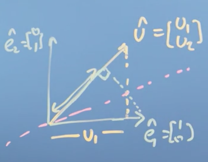

Week 4
Week 4: Matrices Make Linear Mappings
In Module 4, we continue our discussion of matrices; first we think about how to code up matrix multiplication and matrix operations using the Einstein Summation Convention, which is a widely used notation in more advanced linear algebra courses. Then, we look at how matrices can transform a description of a vector from one basis (set of axes) to another. This will allow us to, for example, manipulate images. We'll also look at how to construct a convenient basis vector set in order to do such transformations. Then, we'll write some code to do these transformations and apply this work computationally.
Learning Objectives
- Identify matrices as operators
- Relate the transformation matrix to a set of new basis vectors
- Formulate code for mappings based on these transformation matrices
- Write code to find an orthonormal basis set computationally
Matrices as objects that map one vector onto another
Introduction to Einstein summation convention and the symmetry of the dot product
There is a different, important way to write matrix transformations that we have not yet discussed. It's called the Einstein's Summation Convention. In this convention, we write down the actual operations on the elements of a matrix, which is useful when you're coding or programming. It also lets us see something neat about the dot product, and it lets us deal with non-square matrices.
When we started, we said that multiplying a matrix by a vector or with another matrix is a process of taking every element in each row of the first matrix multiplied with the corresponding element in each column of the other matrix, summing the products and putting them in place. In Einstein's Summation Convention, we represent the matrix product C = AB:
as,
Note
To be clear, its the c_{ij} itself that is written Einstein's Summation Convention, not everything that comes to the right of the = sign.
For i = 1, ..., n and j = 1, ..., p, where A is a n \times m matrix, B is a m \times p matrix, and C is a n \times p matrix.
This is useful when we are implementing matrix multiplication in code, because it makes it obvious exactly what operations we need to perform. In this case, it should be obvious that we can run three loops over i, j and k, and then use an accumulator on the k's to find the elements of the product matrix AB.
Note
We haven't talked about this yet, but now we can see it clearly. There's no reason, so long as the matrices have the same number of entries in k, that the matrices we multiply need to be the same shape!
Let's revisit the dot product in light of the Einstein Summation Convention. If we've got two vectors, let's call them u and v, where u is a column vector having elements u_i and v is another column vector having elements v_i.
When we dot them together, we are computing the following:
Notice that,
and so we notice that there's some equivalence between a matrix transformation (or multiplication) and the dot product. Lets explore this in more detail.
Symmetry of the dot product
Say we have the vector \hat u, with components u_1 and u_2. Let's imagine what happens if we dot \hat u with the basis vector \hat e_1. We know from previous sections that this gives us the length of the projection of \hat u_1 on \hat e_1 multiplied by the norm of \hat e_1. But what if we do the reverse? What if we dot \hat e_1 with \hat u? We already know that numerically, the result will be the same, as the dot product is commutative. So geometrically, we can imagine drawing a line of symmetry between the point where the two projections cross:

Previously, we stated (without proof, although the numerical proof is trivial) that the dot product is commutative, and now, we have shown geometrically why that is true.
Conclusions
In this section, we introduced Einstein's Summation Convention, which is a compact and computationally useful (but not very visually intuitive) way to write down matrix operations. This led to a discussion on the similarities between the dot product and matrix multiplication, where we noticed a connection between matrix multiplication, and the dot product, which itself has a geometric understanding as the concept of projection, i.e. projecting one vector onto another. This allows us to think about matrix multiplication with a vector as being the projection of that vector onto the vectors composing the matrix (i.e. the columns of the matrix).
Matrices transform into the new basis vector set
Tip
Watch this video before reading this section. For more practice with changing basis, see this Khan Academy section.
Matrices changing basis
We have said before that the columns of a transformation matrix are the axes of the new basis vectors after applying the mapping. We're now going to spend a little time looking at how to transform a vector from one set of basis vectors to another.
Let's say we have two sets of basis vectors, which define a first coordinate system (\text{CS}_1) and a second coordinate system (\text{CS}_2). Let the basis vectors of \text{CS}_2, from the perspective of \text{CS}_1 be:
Lets package these basis vectors into a matrix \text{CS}_{21}, for convenience
Think of these as the basis vectors of \text{CS}_2 as they would appear in \text{CS}_1. If we wanted to change the basis of any vectors in \text{CS}_2 to \text{CS}_1, we simply do:
E.g., for the vector
defined in terms of \text{CS}_2
That is, a vector
described in \text{CS}_2, is described as
in \text{CS}_1. Why does this make sense? Well, you can think of \text{CS}_{21} as the transformation that takes the basis vectors of \text{CS}_1 and moves them to the positions of the basis vectors of \text{CS}_2. Applying this transformation to a vector in \text{CS}_2, therefore, gives us the corresponding vector in \text{CS}_1.
Now, how do we do the reverse? How do we translate a vector in \text{CS}_1 to a vector in \text{CS}_2? All we need to do to change basis in the reverse case is to multiply a vector in one coordinate system by the inverse of the matrix containing the basis vectors of another:
E.g.,
Notice that this process gave us the coordinates of the vector
in \text{CS}_2, which is equal to the vector that we started with.
Generalizing
This is a little bit tricky, so lets generalize. Imagine we have two coordinate systems, "ours" and "theirs". We can translate vectors in "their" coordinate system to "our" coordinate system by applying a transformation A, where A is a matrix whose columns contain the basis vectors of "their" coordinate system as they appear in "our coordinate system":
To do the reverse, i.e. take a vector in "our" coordinate system and translate it to "their" coordinate system, we simply multiply "our" vector by the inverse of A
It should be obvious now why this is the case, we simply moved A over in the (1) to get (2)!
Orthonormal basis set
When we discussed vectors and projections, we said that if the new basis vectors were orthogonal then we could use projection to easily change basis.
Note
see Changing basis for a fleshed out example.
Summary
Not orthogonal, use matrix multiplication. Orthogonal, use projection product.
Doing a transformation in a changed basis
Tip
Watch the last little bit of this video first.
Lets discuss the process of applying a transformation in a changed basis. Say again that the basis vectors of coordinate system \text{CS}_2 from the perspective of coordinate system \text{CS}_1 are:
Say further that we have a vector in \text{CS}_2 that we want to transform:
And the tranformation we want to apply is:
Note
This rotates the vector space 45^0 counter-clockwise.
How do we apply the transformation N to a vector defined by the coordinate system \text{CS}_2?
The first thing to do is take the vector {c_2} and multiply it by \text{CS}_{21}, that is, change the basis of the vector {c_2} from \text{CS}_2 to \text{CS}_1:
Then, we can apply the transformation:
What if, once we obtained this output vector, we wanted to change its basis back to \text{CS}_2? Recall from the last section that we multiply the whole thing by the inverse of \text{CS}_{21}^{-1}
This operation essentially builds on the previous operation to return the transformed output vector, {c_1}' relative to \text{CS}_2, that is it returns {c_2}', where {c_2}' is where c_2 ends up after in the basis \text{CS}_2 after some transformation M has been applied.
Generalizing
Again, this is tricky, so lets generalize. Imagine we have two coordinate systems, "ours" and "theirs". If we are given:
- a vector with its basis in "their" coordinate system
- A, a matrix whose columns are the basis vectors of "their" coordinate system as they appear in "our" coordinate system
- M some transformation, with its basis in "our" coordinate system
Then,
Change the vector in "their" basis to "ours":
Apply the transformation in "our" coordinate system:
Change the resulting vector back to "their" coordinate system:
In sum, the transformation A^{-1}MA will take any vector in "their" coordinate system, apply some transformation in "our" coordinate system, and return the resulting vector in "their" coordinate system.
Making multiple mappings, deciding if these are reversible
Orthogonal matrices
It is very useful to compose a transformation matrix whose column and row vectors make up a new basis, with the additional constraint of making all of these component vectors orthogonal. Such a square matrix of orthonormal columns and rows is known as an orthogonal matrix.
In this section we are going to look at how to construct such a matrix, and why it's useful.
(Aside) Transpose
First, we need to define a new matrix operation called the transpose. The transpose of a matrix is an operator which flips a matrix over its diagonal, that is it switches the row and column indices of the matrix by producing another matrix denoted as A^T. It is achieved by any one of the following equivalent actions:
- reflect A over its main diagonal (which runs from top-left to bottom-right) to obtain A^T,
- write the rows of A as the columns of A^T,
- write the columns of A as the rows of A^T.

Formally, the i-th row, j-th column element of A^T is the j-th row, i-th column element of A:
Now let's imagine I have a n \times n matrix A, with a series of column vectors which are going to be the basis vectors of the some new transformed vector space:
Lets place two more constaints on this matrix A:
- First, the column vectors a_i have unit length
- Second, the column vectors a_i are orthogonal to each other.
Note
That is, \hat a_i \cdot \hat a_j = 0 for \forall i \ne j and \hat a_i \cdot \hat a_i = 1.
Lets think about what happens when we multiply A by its transpose, A^T:
So what we notice is that in the case where A is composed of vectors that are normal to each other and have unit length, (i.e. when they're orthonormal), then A^TA = I. Stated another way, A^T in this situation is actually the inverse of A! This special case is known as an orthogonal matrix.
Another thing to note is that because all the basis vectors are of unit length, it must scale space by a factor of one. Stated another way, the determinant of an orthogonal matrix must be either plus or minus one.
Where the minus one arises if the new basis vector set flip space around (from right-handed to left-handed or vice versa). Notice that if A^T, the inverse of A, then by the definition of the inverse:
So, we could pre- or post- multiply and still get the identity. This means that the rows of the orthogonal matrix are also orthonormal to each other! So, the transpose matrix of an orthogonal basis set, is itself another orthogonal basis set.
Now, remember that in the last module on vectors, we said that transforming a vector onto a new coordinate system was as easy as taking the projection or dot product of that vector onto each of the new bases vectors, as long as they were orthogonal to each other. So, if we have a vector r and we want to project r into a new set of axes, let's call them \hat e_1 and \hat e_2, as long as these vectors are orthogonal to each other, then we can project into the new vector space just by taking the dot product of r with \hat e_2, and the dot product of r with \hat e_1, and then we'd have its components in the new set of axis.
Note
See Changing basis for a walked-through example.
Conclusions
In this section, we introduced the most convenient basis vector set of all, the orthonormal bases vector set.
Wherever possible we want to use an orthonormal basis vector set represented as a orthogonal matrix A. This set of vectors has the following properties and consequences that make it easy to work with:
- the transpose of such a matrix will be its inverse, which makes the inverse incredibly easy to compute,
- the transformation will be reversible because space doesn't get collapsed by any dimensions,
- the projections (i.e. the result of computing the projection of a vector onto the matrix A) are just the dot products.
One final note. If we arrange the bases vectors in the correct order, then the determinant will be one.
An easy way to check if they aren't in the right order, is to check if the determinant is minus one. This means we've transformed our space from right to left handed orientation. All we have to do to remedy this is to exchange a pair of vectors in A such that \vert A \vert = 1.
Recognizing mapping matrices and applying these to data
The Gram–Schmidt process
In the last section, we motivated the idea that life is much easier if we can construct an orthonormal basis vector set, but we haven't talked about how to do it. In this section, we will explore just that.
We'll start from the assumption that we already have some linearly independent vectors that span the space we're interested in. Say we have some such vectors V = \{v_1, v_2, ..., v_n\},
Note
If you want to check linear independence, you can write down your vectors as the the columns in a matrix and check that the determinant of that matrix isn't zero.
but they aren't orthogonal to each other or of unit length. Our life would probably be easier if we could construct some orthonormal basis. As it turns out, there's a process for doing just that which is called the Gram-Schmidt process.
Let's take the first vector in the set to be v_1. In this first step, we're just going to normalize v_1 to get our eventual first basis vector e_1
Now, we can think of v_2 as being composed of two things: a component that is in the direction of e_1 and a component that's perpendicular to e_1. We can find the component that's in the direction of e_1 by taking the vector projection v_2 onto e_1:
Note
|e_1| is 1 so we could actually omit it.
If we subtract this vector projection from v_2 we get u_2, a vector which is orthogonal to e_1:
Finally, dividing u_2 by its length gives us e_2, the unit vector orthogonal to e_1:
We could continue this process for all vectors in our set V. The general formula (in pseudocode) is:
# For all vectors in our set V
for i in |V|:
# For all vectors in our set V that come before v_i
for j in i:
# Subtract the component of v_i in the direction of the previous vectors v_j
v_i = v_i - v_i.dot(v_j) * v_j
# If |v_i| is not zero, normalize it to unit length. Otherwise it is linearly dependent on a
# previous vector, so set it equal to the zero vector.
if |v_i| !!! note
0:
v_i = v_i / |v_i|
else:
v_i = zero_vector

Conclusions
So that's how we construct an orthonormal basis set, which makes our lives much easier for all the reasons we discussed here.
Reflecting in a plane
This is a rather involved example, and is probably best if you just watch it yourself here. If I can find the time, i'll make notes for the video!